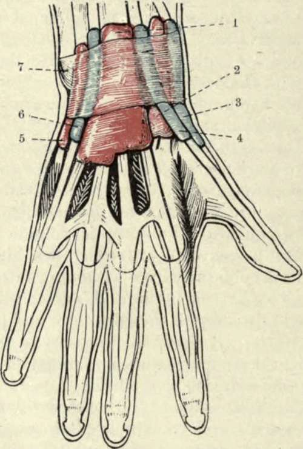

The Wrist-Joint
Description
This section is from the book "Surgical Anatomy", by John A. C. MacEwen. Also available from Amazon: Surgical Anatomy.
The Wrist-Joint
The Wrist-Joint consists of the articulation between radius and triangular fibro-cartilage above, and scaphoid, semilunar, and cuneiform bones below, the upper or radial surface being concave from side to side and from before backwards, the apex of the curve lying 1 inch above a line joining the two styloid processes. It is surrounded by a capsular ligament, which is described as consisting of a strong anterior ligament, extending from the lower end of the radius, triangular fibro-cartilage, and ulnar styloid to the first and second rows of carpal bones ; a weak posterior ligament, extending from the same points posteriorly to the first row of carpal bones ; an external ligament, extending from the radial styloid to the tuberosity of the scaphoid ; and an internal, extending from the ulnar styloid to the pisiform and cuneiform bones and annular ligament.
Fig. 58-The Synovial Sheaths of the Extensor Tendons. (After L. Testut's " Anatomie Humaine.")
1. | Extensor communis digitorum. | 5. | Extensor carpi ulnaris. Extensor minimi digiti. |
2. | Radial carpal extensors. | 6. | |
3. | Extensor brevis pollicis. | 7. | Posterior annular ligament. |
4. | Extensor longus pollicis. |
The midcarpal articulation roughly conforms in outline to the wrist-joint, and possesses a capsular ligament and an extensive synovial cavity. In it the scaphoid, semilunar, and cuneiform articulate with the trapezium, trapezoid, os magnum, and unciform. There are five articular synovial sacs connected with the carpus :
(1) Radiocarpal or wrist ;
(2) midcarpal, which extends between all the bones and also to the carpo-metacarpal joints of the index and middle fingers ;
(3) between the unciform and ring and little fingers-(2) and (3) are sometimes continuous,
(4) between the trapezium and metacarpal of the thumb ;
(5) between the pisiform and cuneiform.
As just stated, the metacarpal bone of the thumb possesses a separate articulation, while these of the first two fingers always, and the last two fingers sometimes, communicate with the midcarpal joint. The wrist depends for its strength chiefly upon the strong tendons surrounding it, and is protected to an extent by the numerous joints of the hand, which lessen shocks communicated to it, and which also prevent leverage of the joint from the distal side. It is stated that dislocation of the wrist is extremely rare, but it should be borne in mind, when estimating its frequency, that it is often easily reduced, a slight pull of the hand sufficing in some cases. The dislocation of the wrist backwards is much more common, probably owing to falls on the outstretched hand being the common mode of production. The hand is generally adducted to the ulnar side, whereas in Colles's fracture it is thrown to the radial side. The movements permitted at the wrist-joint are flexion, extension, abduction, and adduction, and, by a combination of these, circumduction. The midcarpal joint also participates to an extent in these movements. Forced extension, as in falls on the palm, is a more frequent source of injury to the wrist than forced flexion. In forced flexion of the hand the head of the os magnum has occasionally been displaced backwards, so as to project on the dorsum of the wrist, the ligaments being torn. The condition may simulate ganglion of the wrist. The carpus is frequently affected by tubercular disease, which, owing to the extensive synovial sheath, rapidly spreads to the various bones of the carpus, and not infrequently to the carpo-metacarpal joints. The ligaments of the joint and overlying tendon sheaths also become affected, and a fusiform swelling, more prominent posteriorly than anteriorly, is produced, while the hand generally remains straight. In the later stages the forearm and fingers become wasted and powerless, while sinuses form, generally posteriorly.
Fig. 59.-Diagram of the Five Synovial Membranes of the Hand.
1. Pisiform. | 4. | Trapezoid. Trapezium. | 7. Semilunar. |
2. Unciform. | 5. | 8. Scaphoid. | |
3. Os magnum. | 6. | Cuneiform. | 9. Triangular fibro-cartilage. |
Excision of the wrist may be performed in various ways, and while it is a difficult operation on the normal cadaver, it is comparatively easy in the diseased condition. A vertical incision, some 3 to 4 inches long, is made over the wrist in the line of the common extensor tendon to the index finger, that tendon being thrown to the ulnar side prior to making the incision by flexing the three inner fingers, and extending the index, when it is drawn aside by the band connecting it to the tendon of the middle finger. The incision is extended on to the lower end of the radius. The tendons of the extensor secundi internodii pollicis and extensores carpi radialis longior and brevior are drawn to the radial, and the extensor tendons of the fingers drawn to the ulnar side, the joint is flexed, and the fir^t row of bones is exposed and shelled out with the periosteal elevator, and then the carpo-metacarpal joints are opened, and the second or lower row of bones removed. Wherever possible the trapezium, hook of the unciform, and pisiform are left intact, as are also the lower end of the radius and ulna, the ends of the metacarpal bones, and also the tendons in their sheaths. Excellent results are obtained, even the more delicate movements of the fingers, such as apposition of the thumb and forefinger, being retained. Amputation at the wrist for extensive crushing or tubercular disease of the carpus is rarely performed. An elliptical incision planned to give a good palmar flap, beginning at the carpometacarpal joint of the thumb, arching across the palm to the extent of 2 inches below the wrist, and then turning up again to the pisiform, is made on the palmar surface, and is completed dorsally by an incision, with its concavity toward the fingers, and extending ½ inch above the wrist. This incision is made through the skin and superficial tissues, and includes the superficial branches of the radial and ulnar nerves. The tendons are then cut, commencing at the radial side, and the joint is also opened at that side, so as to avoid injury to the triangular fibro-cartilage of the wrist. Dorsally the tendons of the two radial extensors and extensores ossis metacarpi and primi internodii pollicis, together with ex-tensores indicis, communis, minimi digiti, and carpi ulnaris, radial nerve, dorsal branch of the ulnar nerve, and radial artery are cut ; while in the palmar wound the tendons of the flexor sublimis, profundus, longus pollicis, carpi radialis, ulnar artery, superficial volar, ulnar and median nerves, and parts of the short muscles of the thumb and little finger are cut.
Fig. 60.-Transverse Section of Wrist. (Bellamy after Henle [Morris].)
1. | First metacarp. | 8. | Palmaris brev. | «s. | Ext. prim, inter, poll. |
2. | Trapezium. | 9. | Ulnar vessels and nerve. | 16. | Radial vessels. |
3. | Trapezoid. | 10. | Median nerve. | 17. | Ext. carp. rad. long. |
4. | Os magnum. | 11. | Flex, sublim. and profund. | 18. | Ext. carp. rad. brev. |
5. | Unciform. | 12. | Flex. long. poll. | 19. | Ext. indicis. |
6. | Ext. carpi ulnar. | 13. | Flex. carp. rad. | 20. | Ext. comm. dig. |
7. | Hypothenar muscles. | 14. | Thenar muscles. | 21. | Ext. min. dig. |
Continue to: